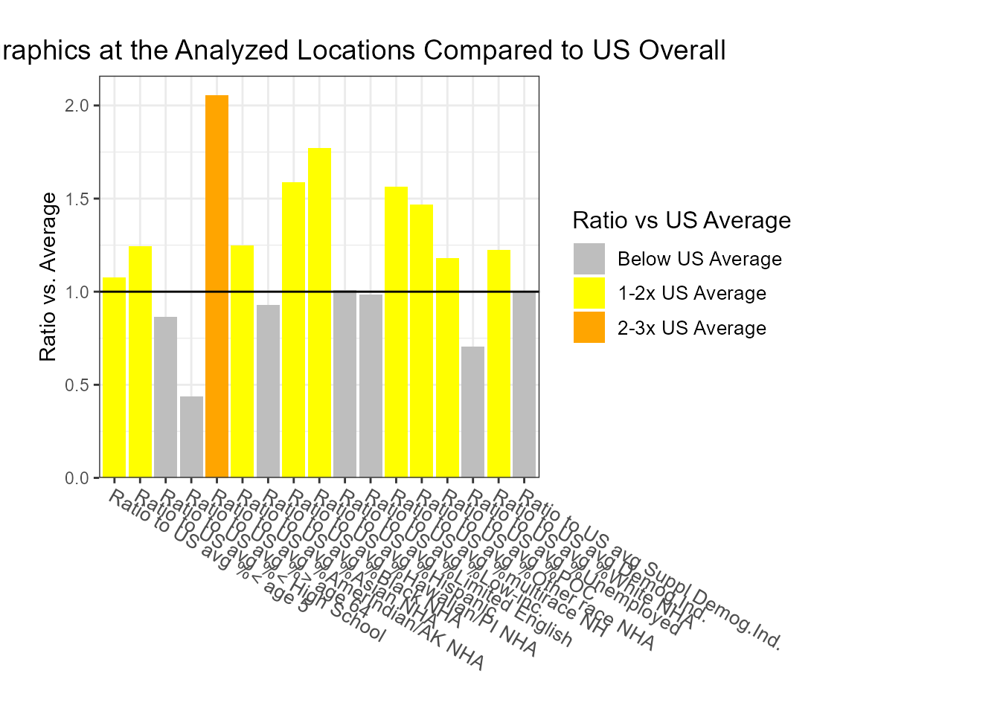
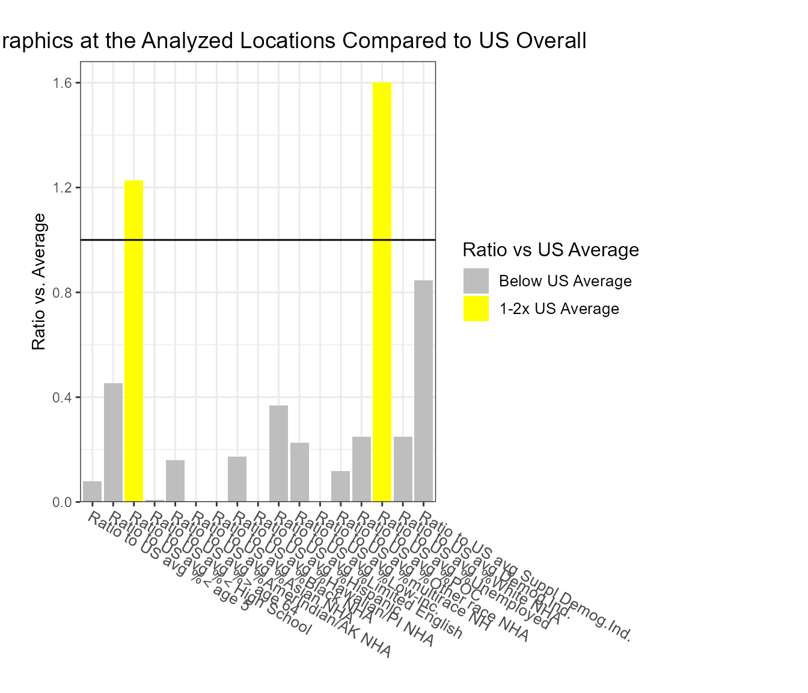
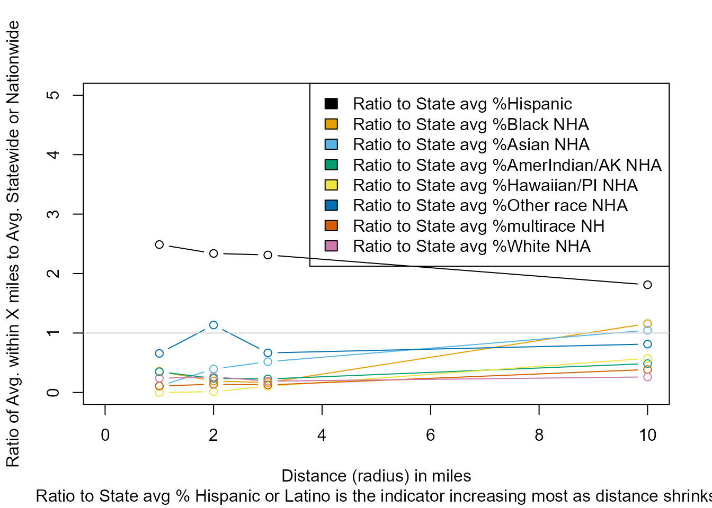
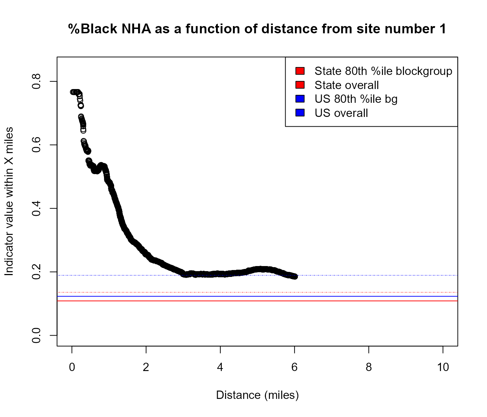
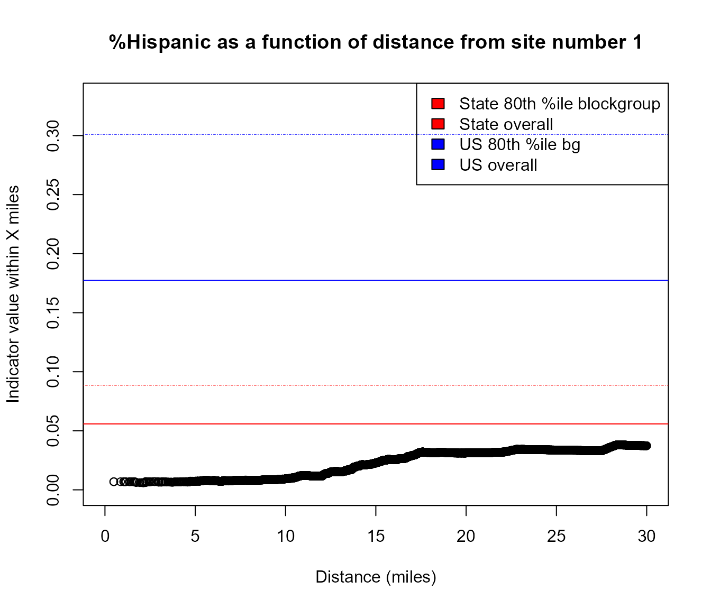
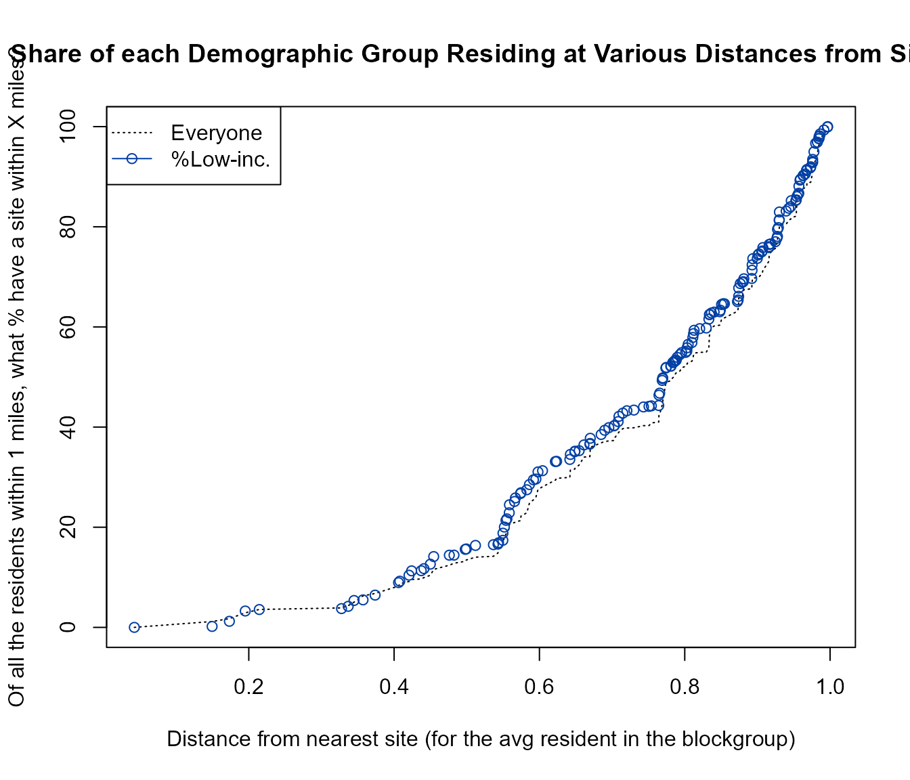
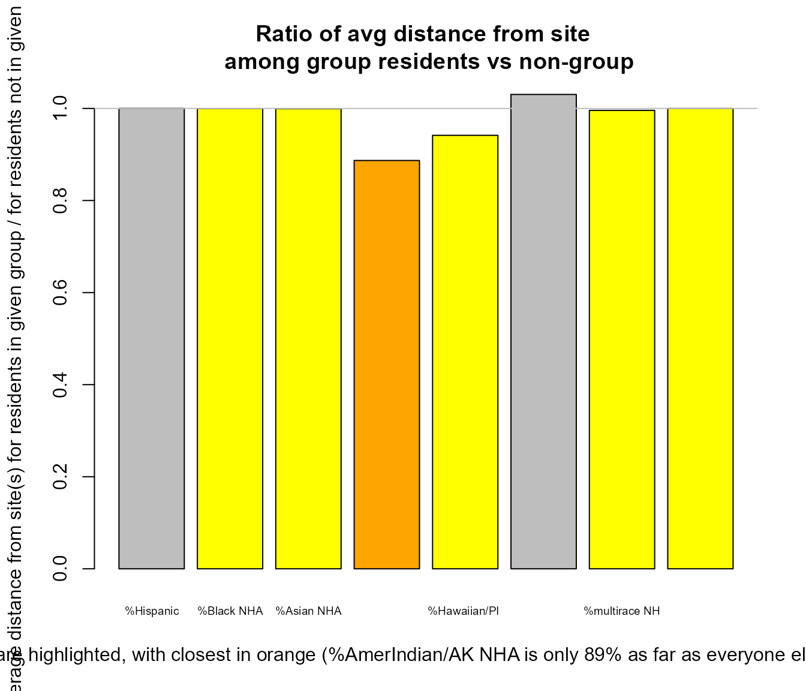

Note: This article is a work in progress
TEST DATA AVAILABLE FOR EJAM
Examples of Inputs and Outputs of Various Functions
# This provides a useful list of test/ sample data objects in EJAM and related packages:
# THE LARGEST FILES that are included in the package
# are mostly the blockgroupstats dataset from EJScreen
# (note the block datasets are not in the package - they get downloaded)
x <- EJAM:::datapack(simple = FALSE); cat("\n\n")
x <- x[order(x$Package, x$Item), ]
# POINT DATA (LAT/LON COORDINATES)
# for testing ejamit(), mapfast(), ejscreenit(), getblocksnearby(), etc., etc.
x[grepl("^testp", x$Item), ] ; cat("\n\n")
# STREET ADDRESSES
# for testing geocoding in latlon_from_address() etc.
x[grepl("^test_", x$Item), ] ; cat("\n\n")
# FACILITY REGISTRY IDs
# for testing latlon_from_regid() etc.
x[grepl("^test[^op_]", x$Item), ]
# EXAMPLES OF THE OUTPUTS FROM ejamit(), ejscreenit(), getblocksnearby(), etc.
# for testing ejam2report(), ejam2excel(), ejam2ratios(), ejam2barplot(), doaggregate(), etc.
x[grepl("^testout", x$Item), ] ; cat("\n\n") HOW TO ANALYZE PROXIMITY USING EJAM
A discussion of background and considerations in selecting radius is provided after this section on how to use the functions.
DEMOGRAPHICS BY DISTANCE AT BLOCK GROUP RESOLUTION
It is easiest to analyze distance increments based on each blockgroup’s average resident here. Block resolution is covered in a later section.
WITHIN ONE RADIUS
Overall list of sites
At the OVERALL LIST of sites as a whole, which groups are overrepresented within X mile radius vs Statewide?
out <- ejamit(testpoints_100, radius = 3.1)
ejam2ratios(out)
#>
#>
#> Average Resident in Places Analyzed vs US or State
#> Ratio_to_US_avg Ratio_to_State_avg
#> Demog.Ind. 1.3 1.2
#> Suppl Demog.Ind. 1.1 1.1
#> %Low-inc. 1.0 1.1
#> %Limited English 1.8 1.4
#> %Unemployed 1.1 1.1
#> %< High School 1.2 1.2
#> %Low life expectancy 0.9 1.0
#> %< age 5 1.1 1.1
#> %> age 64 0.9 0.9
#> %POC 1.5 1.3
#> %Hispanic 1.6 1.3
#> %Black NHA 1.2 1.5
#> %Asian NHA 2.0 1.3
#> %AmerIndian/AK NHA 0.4 0.8
#> %Hawaiian/PI NHA 0.9 1.2
#> %Other race NHA 1.5 1.1
#> %multirace NH 1.0 1.0
#> %White NHA 0.7 0.8
#> PM2.5 1.1 1.1
#> Ozone 1.0 1.0
#> Cancer risk 1.2 1.2
#> Respiratory 1.3 1.2
#> Diesel PM 2.3 1.7
#> %pre-1960 1.7 1.2
#> Traffic 2.6 1.7
#> NPL 1.9 1.2
#> RMP 1.1 1.2
#> TSDF 3.6 2.0
#> NPDES 0.4 1.4
#> UST 3.1 1.9
#> Toxic Releases to Air 0.5 1.2
ejam2barplot(out)
Just one site
At JUST ONE SITE, which groups are overrepresented within X mile radius vs Statewide?
out1 <- ejamit(testpoints_100[2, ], radius = 3.1)
ejam2ratios(out1)
ejam2barplot(out1)
Site by site comparison
Which groups are overrepresented at EACH SITE, within X mile radius vs Statewide
out <- testoutput_ejamit_10pts_1miles
x = round(data.frame(out$results_bysite)[, c("ratio.to.state.avg.pctlowinc", "ratio.to.state.avg.pctmin")], 2)
names(x) = fixcolnames(names(x),"r","shortlabel")
x = data.frame(sitenumber = 1:NROW(x), x)
x
#> sitenumber Ratio.to.State.avg..Low.inc. Ratio.to.State.avg..POC
#> 1 1 1.16 0.38
#> 2 2 1.04 1.00
#> 3 3 0.58 0.47
#> 4 4 0.33 0.69
#> 5 5 2.01 1.61
#> 6 6 2.15 1.77
#> 7 7 1.03 1.34
#> 8 8 0.73 0.87
#> 9 9 1.12 1.09
#> 10 10 0.36 0.54Plot that, comparing sites, but for just one demographic indicator
barplot(x$Ratio.to.State.avg..Low.inc.,
names.arg = x$sitenumber,
main = "% Low Income within 1 mile vs Statewide",
ylab = "Ratio to State Avg" ,
xlab = "Site number")WITHIN MULTIPLE DISTANCES - COMPARING RADIUS CHOICES
Overall list of sites
At the OVERALL LIST of sites as a whole, which groups are overrepresented within X mile radius vs Statewide?
radii <- c(1,2,3,10)
#radii <- c(1, 10) # quicker example
pts <- testpoints_100[10:12, ]See just the table
x <- ejamit_compare_distances(pts, radii = radii, quiet = TRUE, plot = FALSE)#> Analyzing 3 points, radius of 1 miles around each.
#> Analyzing 3 points, radius of 2 miles around each.
#> Analyzing 3 points, radius of 3 miles around each.
#> Analyzing 3 points, radius of 10 miles around each.
#>
#> 1 2 3 10
#> Ratio to State avg %Hispanic 2.5 2.4 2.3 1.8
#> Ratio to State avg %Black NHA 0.1 0.2 0.1 1.2
#> Ratio to State avg %Asian NHA 0.1 0.4 0.5 1.0
#> Ratio to State avg %AmerIndian/AK NHA 0.4 0.5 0.3 0.4
#> Ratio to State avg %Hawaiian/PI NHA 0.0 0.1 0.2 0.6
#> Ratio to State avg %Other NHA 0.6 0.7 0.5 0.9
#> Ratio to State avg %multirace (NH) 0.1 0.1 0.1 0.4
#> Ratio to State avg %White NHA 0.2 0.2 0.2 0.3See the plot
# x <- ejamit_compare_distances(pts, radii = radii, quiet = TRUE) # in which default is plot=TRUE
## or
ejamit_compare_distances2plot(x)
#>
#> Indicators that increase the most as you get closer:
#> [1] "Ratio to State avg % Hispanic"DEMOGRAPHICS AT BLOCK GROUP RESOLUTION
Most of the EJAM functions use distance to the average resident of a block group, which is calculated from the distance to each block’s internal point and uses the approximation that within a block the average resident and all residents are as far as that internal point. For typical distances analyzed in EJAM (e.g., 3 mile radius, or about 5 km) that is a good approximation, since only about 2% of all US blocks are larger than 1 square mile.
If you need high spatial resolution (block by block) plots of an indicator as a function of distance, you can directly work with getblocksnearby() or just use the function plot_distance_by_pctd(). It uses the distance from the site to each block’s internal point (like a centroid) rather than just the distance to the average resident in each block group.
How demographics at ONE SITE vary as a continuous function of distance
Example of area where %Black is very high within 1 mile but drops by 3 miles away
pts = testpoints_100[3,]
plot_distance_by_pctd(
getblocksnearby(pts, radius = 10, quiet = T),
score_colname = "pctnhba")
#> Warning in plot_distance_by_pctd(getblocksnearby(pts, radius = 10, quiet = T),
#> : aggregate of multiple sites not yet implemented - using site #1
#> Analyzing 1 points, radius of 10 miles around each.
#> Index: <ejam_uniq_id>
#> bgid ejam_uniq_id blockid distance blockwt distance_unadjusted
#> <int> <int> <int> <num> <num> <num>
#> 1: 181892 1 5981964 0.02700000 0.01052632 0.02729712
#> 2: 181892 1 5981962 0.05190788 0.01578947 0.05190788
#> 3: 181892 1 5981969 0.05580376 0.01403509 0.05580376
#> 4: 181892 1 5981974 0.06394646 0.07719298 0.06394646
#> 5: 181892 1 5981966 0.07526961 0.05789474 0.07526961
#> ---
#> 11659: 181884 1 5981880 9.99831200 0.06813373 9.99831200
#> 11660: 181119 1 5964550 9.99871540 0.03242075 9.99871540
#> 11661: 181538 1 5974387 9.99898624 0.04766949 9.99898624
#> 11662: 181885 1 5981891 9.99927330 0.10581093 9.99927330
#> 11663: 190502 1 6274610 9.99937630 0.02215936 9.99937630
#> pctnhba pop scorewts scores wtdmean_within
#> <num> <int> <int> <num> <num>
#> 1: 74.937965 806 806 74.937965 74.93797
#> 2: 74.937965 806 806 74.937965 74.93797
#> 3: 74.937965 806 806 74.937965 74.93797
#> 4: 74.937965 806 806 74.937965 74.93797
#> 5: 74.937965 806 806 74.937965 74.93797
#> ---
#> 11659: 9.685115 2096 2096 9.685115 NA
#> 11660: 3.163445 1138 1138 3.163445 NA
#> 11661: 8.716707 1239 1239 8.716707 NA
#> 11662: 22.866175 949 949 22.866175 NA
#> 11663: 0.000000 2095 2095 0.000000 NA
#browseURL(url_ejscreen_report(lat = pts$lat, lon = pts$lon, radius = 0.5))
#browseURL(url_ejscreen_report(lat = pts$lat, lon = pts$lon, radius = 3))Example of area that has higher %Hispanic as you go 10 to 30 miles away from this specific point
pts = data.table::data.table(lat = 45.75464, lon = -94.36791)
plot_distance_by_pctd(pts,
sitenum = 1, score_colname = "pcthisp")
#> Analyzing 1 points, radius of 30 miles around each.
#> Index: <ejam_uniq_id>
#> bgid ejam_uniq_id blockid distance blockwt distance_unadjusted
#> <int> <int> <int> <num> <num> <num>
#> 1: 119513 1 3822989 0.4950000 0.046819788 0.4937558
#> 2: 119513 1 3822990 0.4950000 0.040636042 0.4841934
#> 3: 119513 1 3823006 0.8649408 0.036219081 0.8649408
#> 4: 119513 1 3822988 1.0347047 0.022968198 1.0347047
#> 5: 119513 1 3822987 1.0602738 0.020318021 1.0602738
#> ---
#> 6903: 118072 1 3758106 29.9734592 0.098286745 29.9734592
#> 6904: 119403 1 3818415 29.9827595 0.003302146 29.9827595
#> 6905: 119559 1 3826523 29.9848995 0.006632277 29.9848995
#> 6906: 119410 1 3818865 29.9923840 0.004770423 29.9923840
#> 6907: 119535 1 3824850 29.9983311 0.002557545 29.9983311
#> pcthisp pop scorewts scores wtdmean_within
#> <num> <int> <int> <num> <num>
#> 1: 0.1672241 1196 1196 0.1672241 0.1672241
#> 2: 0.1672241 1196 1196 0.1672241 0.1672241
#> 3: 0.1672241 1196 1196 0.1672241 0.1672241
#> 4: 0.1672241 1196 1196 0.1672241 0.1672241
#> 5: 0.1672241 1196 1196 0.1672241 0.1672241
#> ---
#> 6903: 8.3673469 980 980 8.3673469 3.6223620
#> 6904: 0.0000000 1779 1779 0.0000000 3.6222755
#> 6905: 0.5000000 1400 1400 0.5000000 3.6221576
#> 6906: 1.6587678 1688 1688 1.6587678 3.6220934
#> 6907: 0.0000000 1258 1258 0.0000000 3.6220460
# browseURL(url_ejscreen_report(lat = pts$lat, lon = pts$lon, radius = 10))
# browseURL(url_ejscreen_report(lat = pts$lat, lon = pts$lon, radius = 30))Block by block details are also easy to view in a map of all the nearby blocks, as shown in the section on [plotblocksnearby()] and details of blocks near one site.
Cumulative Distribution plots of groups as a continuous function of distance
distance_by_group_plot(
out$results_bybg_people,
demogvarname = 'pctlowinc', demoglabel = 'Low Income')
MEAN DISTANCE BY DEMOGRAPHIC GROUP
The analysis described above looks at demographics as a function of distance. Another perspective is provided by looking at distance as a function of demographic group. This means looking at the average distance or the whole distribution of distances (or proximities) among all the residents within a single demographic group, one group at a time, and comparing these groups.
Overall list of sites
Mean distance of each group, at the OVERALL LIST of sites as a whole
out <- testoutput_ejamit_1000pts_1miles
## But try a larger radius to reveal more information:
# out <- ejamit(testpoints_100, radius = 10)
# see a table of demog indicators
distance_mean_by_group(out$results_bybg_people)
#> group nearest nearer ratio
#> Demog.Ind. Demog.Index FALSE TRUE 0.992
#> Suppl Demog.Ind. Demog.Index.Supp FALSE TRUE 0.990
#> %Low-inc. pctlowinc FALSE TRUE 0.985
#> %Limited English pctlingiso FALSE TRUE 0.986
#> %Unemployed pctunemployed FALSE TRUE 0.994
#> %< High School pctlths FALSE TRUE 0.985
#> %Low life expectancy lowlifex FALSE TRUE 0.998
#> %< age 5 pctunder5 FALSE FALSE 1.003
#> %> age 64 pctover64 FALSE FALSE 1.002
#> %POC pctmin FALSE TRUE 0.997
#> %Hispanic pcthisp FALSE FALSE 1.000
#> %Black NHA pctnhba FALSE TRUE 1.000
#> %Asian NHA pctnhaa FALSE TRUE 0.999
#> %AmerIndian/AK NHA pctnhaiana TRUE TRUE 0.887
#> %Hawaiian/PI NHA pctnhnhpia FALSE TRUE 0.942
#> %Other race NHA pctnhotheralone FALSE FALSE 1.030
#> %multirace NH pctnhmulti FALSE TRUE 0.996
#> %White NHA pctnhwa FALSE TRUE 1.000
#> avg_distance_for_group avg_distance_for_nongroup
#> Demog.Ind. 0.69 0.69
#> Suppl Demog.Ind. 0.68 0.69
#> %Low-inc. 0.68 0.69
#> %Limited English 0.68 0.69
#> %Unemployed 0.69 0.69
#> %< High School 0.68 0.69
#> %Low life expectancy 0.69 0.69
#> %< age 5 0.69 0.69
#> %> age 64 0.69 0.69
#> %POC 0.69 0.69
#> %Hispanic 0.69 0.69
#> %Black NHA 0.69 0.69
#> %Asian NHA 0.69 0.69
#> %AmerIndian/AK NHA 0.64 0.72
#> %Hawaiian/PI NHA 0.66 0.70
#> %Other race NHA 0.70 0.68
#> %multirace NH 0.70 0.70
#> %White NHA 0.69 0.69
# for a barplot, just race/ethnicity groups
distance_mean_by_group(out$results_bybg_people,
demogvarname = names_d_subgroups,
demoglabel = fixcolnames(names_d_subgroups, "r", "shortlabel"),
graph = TRUE) 
#> group nearest nearer ratio avg_distance_for_group
#> %Hispanic pcthisp FALSE FALSE 1.000 0.69
#> %Black NHA pctnhba FALSE TRUE 1.000 0.69
#> %Asian NHA pctnhaa FALSE TRUE 0.999 0.69
#> %AmerIndian/AK NHA pctnhaiana TRUE TRUE 0.887 0.64
#> %Hawaiian/PI NHA pctnhnhpia FALSE TRUE 0.942 0.66
#> %Other race NHA pctnhotheralone FALSE FALSE 1.030 0.70
#> %multirace NH pctnhmulti FALSE TRUE 0.996 0.70
#> %White NHA pctnhwa FALSE TRUE 1.000 0.69
#> avg_distance_for_nongroup
#> %Hispanic 0.69
#> %Black NHA 0.69
#> %Asian NHA 0.69
#> %AmerIndian/AK NHA 0.72
#> %Hawaiian/PI NHA 0.70
#> %Other race NHA 0.68
#> %multirace NH 0.70
#> %White NHA 0.69
# or plot_distance_mean_by_group() is a synonym
# for just 1 indicator
print(distance_mean_by_group(
out$results_bybg_people,
demogvarname = 'pctlowinc', demoglabel = 'Low Income'))
#> group nearest nearer ratio avg_distance_for_group
#> Low Income pctlowinc TRUE TRUE 0.985 0.68
#> avg_distance_for_nongroup
#> Low Income 0.69Site by site comparison
Mean distance of each group, at EACH SITE, as ratio to mean of everyone else nearby
Ratios at each site, of avg dist of group / avg dist of everyone else near site:
out <- testoutput_ejamit_10pts_1miles
## But try a larger radius to reveal more information:
# out <- ejamit(testpoints_10, radius = 31)
x = distance_by_group_by_site(out$results_bybg_people)
#> Ratios at each site, of avg dist of group / avg dist of everyone else near site:
x
#> 2 5 4 7 1 3 8 6 10
#> Demog.Ind. 0.933 1.040 0.989 1.003 1.389 1.031 1.011 0.994 0.959
#> Suppl Demog.Ind. 0.947 1.017 0.993 0.984 1.216 1.005 1.025 1.009 0.997
#> %Low-inc. 0.919 1.056 1.026 1.005 1.534 1.033 0.983 1.016 0.877
#> %Limited English 0.788 0.984 0.885 1.031 NaN 0.992 1.077 1.019 0.931
#> %Unemployed 0.887 0.944 1.017 0.984 1.601 0.957 1.072 1.065 1.053
#> %< High School 0.907 1.053 1.011 0.940 1.061 0.972 1.160 0.999 1.005
#> %Low life expectancy 1.005 0.989 0.982 0.982 0.912 1.013 0.993 0.986 1.022
#> %< age 5 0.985 0.969 0.962 0.997 1.008 1.008 0.966 1.037 1.079
#> %> age 64 0.988 0.857 1.065 0.967 1.451 1.028 0.927 0.912 1.094
#> %POC 0.946 1.034 0.974 1.003 1.206 1.029 1.036 0.960 0.982
#> %Hispanic 1.017 1.000 1.000 1.001 0.999 1.000 0.995 1.000 1.000
#> %Black NHA 1.000 0.084 1.451 0.994 0.931 0.946 1.011 1.001 0.879
#> %Asian NHA 1.101 -0.570 1.001 0.998 NaN 0.977 1.093 0.963 0.994
#> %AmerIndian/AK NHA 0.535 0.919 0.682 5.009 2.778 1.169 1.285 0.597 NaN
#> %Hawaiian/PI NHA NaN NaN 1.317 NaN 3.944 NaN NaN NaN NaN
#> %Other race NHA NaN 1.441 0.580 0.763 NaN 0.787 0.674 1.005 0.000
#> %multirace NH 1.160 0.326 1.000 0.986 21.169 0.983 0.955 0.994 -0.034
#> %White NHA 1.000 1.036 1.000 1.000 1.000 1.000 1.000 0.998 1.000
#> 9
#> Demog.Ind. 0.959
#> Suppl Demog.Ind. 0.955
#> %Low-inc. 0.915
#> %Limited English 1.109
#> %Unemployed 1.051
#> %< High School 0.876
#> %Low life expectancy 0.998
#> %< age 5 1.054
#> %> age 64 0.964
#> %POC 1.003
#> %Hispanic 1.000
#> %Black NHA 1.045
#> %Asian NHA 2.226
#> %AmerIndian/AK NHA 0.887
#> %Hawaiian/PI NHA NaN
#> %Other race NHA 0.891
#> %multirace NH 0.983
#> %White NHA 1.000
# summary of closest group at each site and by how much
data.frame(site = colnames(x),
closestgroup = rownames(x)[sapply(x, which.min)],
their_avg_distance_as_pct_of_everyone_elses = round(100 * sapply(x, min, na.rm = TRUE), 0)
)
#> site closestgroup their_avg_distance_as_pct_of_everyone_elses
#> 2 2 %AmerIndian/AK NHA 54
#> 5 5 %Asian NHA -57
#> 4 4 %Other race NHA 58
#> 7 7 %Other race NHA 76
#> 1 1 %Low life expectancy 91
#> 3 3 %Other race NHA 79
#> 8 8 %Other race NHA 67
#> 6 6 %AmerIndian/AK NHA 60
#> 10 10 %multirace NH -3
#> 9 9 %< High School 88BACKGROUND AND OVERVIEW OF ISSUES IN PROXIMITY, DISTANCE, OR RADIUS
Distance from a potential source of environmental risk is often used as a simple proxy for actual exposure or risk, when data are limited. Proximity analysis uses distance (how far away) from a site, which is just the opposite of proximity (how near) to a site.
Demographics-by-distance or distance-by-demographic group?
Two basic ways to report demographics and risk are 1) showing demographics as a function or risk, and 2) showing risk as a function of demographics:
Demographics as a function of risk (or proximity): Many proximity analyses report percent demographics by distance or risk bin, such as % low income within 3 miles of a point. This expresses demographics as a function of proximity or risk. Sometimes other distance or risk bins are used, such as areas with risk above some cutoff. And sometimes instead of a continuous measure of % demographics, the demographic data are used to categorize places in bins, such as areas in the top quartile of poverty rates.
Risk (or proximity) as a function of demographics: A different way to present this information is to report distance or risk as a function of demographic group – this expresses distance within each demographic group, such as the average distance by group or the full distribution of risk within each group.
Radius, radii, or continuous distance?
Proximity or distance as binary, categorical, or continuous metrics: Proximity analysis has often relied on picking a single distance, a radius, and analyzing conditions within that radius, such as all residents who live within 3 miles of a point where a regulated facility is located. Sometimes an analysis will look at two or even three distances. In some more sophisticated analyses, distance is treated as a continuous measure. Some tools like EJScreen use a proximity metric based on the inverse of distance (1/d) to provide a proximity score that gets higher as distance gets smaller. But many EJ analyses still use a single distance and analyze conditions within that distance.
EJAM makes it easier to do any of these types of analysis, because conclusions can be sensitive to the choice of a single radius, and metrics and methods provide different perspectives and reveal a richer picture of where people actually live in relation to potential sources of exposure or risk.
Comparisons within what distances or to what reference area(s)?
This is a tricky issue in proximity analysis: There is a subtle but vital difference between proximity analysis using a single radius (binary distance) and analysis using continuous distance. One way to think of this is that there are two aspects of or degrees of proximity to consider when analyzing demographic groups within a certain fixed distance (radius) from a single facility point (or a whole set of facilities). These two ways of summarizing proximity are complementary:
Which groups tend to live nearby in the sense of being within the radius versus outside the radius selected? In other words, which groups are “overrepresented” within X miles of the site? This treats proximity as a yes/no, binomial question – a resident is nearby or not. It would focus on whether someone is anywhere within 3 miles, say, and ignore the differences between being 1, 2, or 3 miles away. Most proximity analysis has tended to look at this type of summary.
Among the residents within X miles of the site, which groups live especially close to the facility? This question recognizes proximity is a continuous variable, and focuses on the difference between 1 mile, 1.5 miles, etc. However, it only looks at residents within the X miles radius area analyzed, so it fails to recognize that some groups tend to live more than 3 miles away, for example. This perspective does not take into account which groups are overrepresented within the original total radius near a site.
Some functions like distance_mean_by_group() or distance_by_group_by_site() do the second of these two types of analysis. They report, only among those anywhere inside the radius, which groups are closer to the site.
In a specific location, for example, one demographic group could be underrepresented within 3 miles, but those few who are in the group still might live right next to the facility in which case their average distance would be higher than that of any other group because this function only counts those within the radius analyzed.
In some other location, the opposite could occur – if one group is overrepresented within 3 miles, they still might all live in a community about 2.9 miles away from the site – that would mean their distance from the site on average is greater (or their proximity score is lower) than other groups within 3 miles of the site.
The question of whether to compare to Statewide or Nationwide or urban/rural or other reference averages or percentiles is related to this question of how to look at distances, or exposures or risk, just like it relates to how to look at demographic percentages. One could look at % demographics within 1 mile, 2 miles, etc. all the way out until one was looking at the county overall, the state overall, and eventually the nation overall. Selecting a single radius or selecting a single reference area should be done with a recognition of what questions one is actually trying to answer, and an understanding of how impacts vary with distance from a particular type of facility or source of potential risk.
If one is comparing demographic groups in terms of distance (or risk level), or if one is comparing % demographics at each distance (or risk level), the implicit assumption is that there is some “expected” rate, and/or some “equitable” or “proportionate” % or ratio or risk.
CHOICE OF RADIUS AND UNCERTAINTY DUE TO A SMALL RADIUS WHERE BLOCKS ARE LARGE
Choosing a radius (or polygon) that is small relative to local Census blocks can lead to significant uncertainty in EJAM/EJScreen estimates, so it is important to understand the details if one wants to use a small radius especially in rural (low population density) areas.
To help consider this uncertainty, EJAM reports how many block centroids were found inside each area (inside a circular buffer defined by the selected radius, or inside a polygon that is from a shapefile). That count of blocks is found in a column of the spreadsheet output provided by the web app and also the table called results_bysite that is one output of the ejamit() function:
# out <- ejamit(testpoints_1000, radius = 1)
# out$results_bysite$blockcount_near_site
out <- testoutput_ejamit_1000pts_1miles
barplot(
table(cut(
out$results_bysite$blockcount_near_site,
c(-1, 9, 29, 100, 1000)
)),
names.arg = c("< 10 blocks", "10-29", "30-100", "> 100 blocks"),
main = "How many blocks are within 1 mile of these 1,000 facilities?",
ylab = "# of facilities",
xlab = "# of blocks nearby"
)For more details about distance adjustments, overlaps of circles, etc.
getblocks_diagnostics(
testoutput_getblocksnearby_1000pts_1miles,
# getblocksnearby(testpoints_1000, radius = 1, quiet = T),
detailed = T, see_pctiles = T, see_distanceplot = T
)Suggestions on radius and uncertainty
Here are some suggestions about how to consider the radius in relation to uncertainty where blocks are large:
- A closer look at uncertainty and care in communicating uncertainty may be needed where a circle or polygon contains fewer than about 30 block centroids. That is especially important if it contains fewer than about 10, and essential if it contains only 1 or zero block centroids.
- Using a radius of 5 miles or more does not raise these issues in 99% of US locations where EPA-regulated facilities are found.
- A radius of 3 miles might need a closer look for about 1% to 5% of typical sites in the US.
- A radius of 1 mile or less requires caution and understanding of the issues at a significant share of locations in the US (about 1 in 4 locations might need a closer look to check for uncertainties).
- A 0.5 mile radius should not be used without cautious interpretation or offline analysis in most locations where EPA-regulated facilities are located.
- A 0.25 mile radius should only be used on a case-by-case basis where each location is examined individually and other methods are likely more suited for the analysis of those sites.
These considerations are explained further in the discussion below.
Demographic counts and percentages or environmental indicators are calculated from block group demographic and environmental indicators and an estimate of what fraction of each block group is inside each site. For proximity analysis that means a circle is drawn around a point using a radius, and for shapefiles a similar approach is used. In either case, the fraction of the block group counted as inside the area analyzed is based on which block centroids (each is technically called a block “internal point”) are inside the circle or polygon. All the residents of a block are assumed to be inside if the block centroid is inside. This is exactly true unless a block is on the edge of the circle or polygon. Even for the ones on the edge, some centroids are just outside and some just inside the shape, so the contributions of some blocks are overcounted and other undercounted, but those tend to cancel each other out in the sense that it is unlikely they would all be undercounted, for example. Still, when a large share of the block points in circle or polygon are from blocks not entirely inside, uncertainty is higher than when the vast majority of blocks are entirely inside. In other words, if the circle or polygon has a very large number of blocks in it, uncertainty is lower because only a small fraction are along the edge and bisected. If a radius of 3 miles is used, the area is 28 square miles. If the blocks in that location are only about 0.28 square miles each, the circle might contain or partly contain about 100 blocks.
The dataset used by EJAM called blockwts has a column called block_radius_miles that is what the radius would be if the block were circular, and it was created based on area = pi * block_radius_miles^2 or block_radius_miles = sqrt(area / pi) where area is in square miles.
Details on the blocks found near one site
Table of distances between each site and each block
Use getblocksnearby() to quickly find residents/blocks
that are within a specified distance, as a table of distances between
sites and nearby blocks.
sitepoints <- testpoints_10[1:2, ]
sites2blocks <- getblocksnearby(
sitepoints = sitepoints,
radius = 3.1
)
#> Analyzing 2 points, radius of 3.1 miles around each.
#> Finding Census blocks with internal point within 3.1 miles of the site (point), for each of 2 sites (points)...
#> Stats via getblocks_diagnostics(), but BEFORE ADJUSTING UP FOR VERY SHORT DISTANCES:
#> min distance before adjustment: 0.06504053
#> max distance before adjustment: 4.670403
#>
#>
#>
#> Adjusting upwards the very short distances now...
#> Stats via getblocks_diagnostics(), AFTER ADJUSTING up FOR SHORT DISTANCES:
#> min distance AFTER adjustment: 0.081
#> max distance AFTER adjustment: 3.097412
#>
#>
#> DISTANCES FROM BLOCKS (AND RESIDENTS) TO SITES (AND FOR CLOSEST SITE)
#>
#> 3.097412 miles is max. distance to block internal point (distance_unadjusted)
#> 3.097412 miles is max. distance to average resident in block (distance reported)
#> 0.06504053 miles is shortest distance to block internal point (distance_unadjusted)
#> 0.081 miles is shortest distance to average resident in block (distance reported)
#> 3 block distances were adjusted (these stats may count some blocks twice if adjusted at 2+ sites)
#> 2 block distances were adjusted up (reported dist to avg resident is > dist to block internal point)
#> 1 block distances were adjusted down (reported < unadjusted)
#> 2 unique sites had one or more block distances adjusted due to large block and short distance to block point
#>
#> BLOCK COUNTS PER SITE (FEWER MEANS HIGHER UNCERTAINTY AT THOSE SITES)
#>
#> 362 blocks are near the avg site or in avg buffer
#> (based on their block internal point, like a centroid)
#>
#> sites blocks_per_site
#> 1 0 Not even 1
#> 2 0 some but <10
#> 3 0 10-29
#> 4 2 at least 30 blocks
#>
#> BLOCK COUNTS TOTAL AND IN OVERLAPS OF AREAS (MULTIPLE SITES FOR SOME RESIDENTS)
#>
#> 723 actual unique blocks total
#> 723 blocks including doublecounting in overlaps,
#> in final row count (block-to-site pairs table)
#> 1 is ratio of blocks including multicounting / actual count of unique blocks
#> 0% of unique blocks could get counted more than once
#> because those residents are near two or more sites
#> (assuming they live at the block internal point
#>
#> SITE COUNTS TOTAL AND IN OVERLAPS OF AREAS (MULTIPLE SITES FOR SOME RESIDENTS)
#>
#> 2 unique output sites
#>
#> 723 blocks (and their residents) have exactly 1 site nearby
#> 0 blocks (and their residents) have exactly 2 sites nearby
#> 0 blocks (and their residents) have exactly 3 sites nearby
head(sites2blocks)
#> Key: <blockid>
#> ejam_uniq_id blockid distance blockwt bgid distance_unadjusted
#> <int> <int> <num> <num> <int> <num>
#> 1: 2 296 2.946818 0.00000000 15 2.946818
#> 2: 2 297 3.040476 0.00000000 15 3.040476
#> 3: 2 773 2.925869 0.07083906 32 2.925869
#> 4: 2 780 2.873082 0.03576341 32 2.873082
#> 5: 2 781 2.739460 0.05249885 32 2.739460
#> 6: 2 786 3.077032 0.03163686 32 3.077032Detailed stats on blocks found near site(s)
x <- getblocks_diagnostics(sites2blocks)
#>
#> DISTANCES FROM BLOCKS (AND RESIDENTS) TO SITES (AND FOR CLOSEST SITE)
#>
#> 3.097412 miles is max. distance to block internal point (distance_unadjusted)
#> 3.097412 miles is max. distance to average resident in block (distance reported)
#> 0.06504053 miles is shortest distance to block internal point (distance_unadjusted)
#> 0.081 miles is shortest distance to average resident in block (distance reported)
#> 3 block distances were adjusted (these stats may count some blocks twice if adjusted at 2+ sites)
#> 2 block distances were adjusted up (reported dist to avg resident is > dist to block internal point)
#> 1 block distances were adjusted down (reported < unadjusted)
#> 2 unique sites had one or more block distances adjusted due to large block and short distance to block point
#>
#> BLOCK COUNTS PER SITE (FEWER MEANS HIGHER UNCERTAINTY AT THOSE SITES)
#>
#> 362 blocks are near the avg site or in avg buffer
#> (based on their block internal point, like a centroid)
#>
#> sites blocks_per_site
#> 1 0 Not even 1
#> 2 0 some but <10
#> 3 0 10-29
#> 4 2 at least 30 blocks
#>
#> BLOCK COUNTS TOTAL AND IN OVERLAPS OF AREAS (MULTIPLE SITES FOR SOME RESIDENTS)
#>
#> 723 actual unique blocks total
#> 723 blocks including doublecounting in overlaps,
#> in final row count (block-to-site pairs table)
#> 1 is ratio of blocks including multicounting / actual count of unique blocks
#> 0% of unique blocks could get counted more than once
#> because those residents are near two or more sites
#> (assuming they live at the block internal point
#>
#> SITE COUNTS TOTAL AND IN OVERLAPS OF AREAS (MULTIPLE SITES FOR SOME RESIDENTS)
#>
#> 2 unique output sites
#>
#> 723 blocks (and their residents) have exactly 1 site nearby
#> 0 blocks (and their residents) have exactly 2 sites nearby
#> 0 blocks (and their residents) have exactly 3 sites nearby
# x <- getblocks_summarize_blocks_per_site(sites2blocks)
# print(x) shows more info returned invisiblyMap 1 site to inspect the blocks nearby
x <- plotblocksnearby(testpoints_10[1, ], radius = 3, returnmap = F)
#> Analyzing 1 points, radius of 3 miles around each.
#> Finding Census blocks with internal point within 3 miles of the site (point), for each of 1 sites (points)...
#> Stats via getblocks_diagnostics(), but BEFORE ADJUSTING UP FOR VERY SHORT DISTANCES:
#> min distance before adjustment: 0.2321264
#> max distance before adjustment: 4.412158
#>
#>
#>
#> Adjusting upwards the very short distances now...
#> Stats via getblocks_diagnostics(), AFTER ADJUSTING up FOR SHORT DISTANCES:
#> min distance AFTER adjustment: 0.2321264
#> max distance AFTER adjustment: 2.990489
#>
#>
#> DISTANCES FROM BLOCKS (AND RESIDENTS) TO SITES (AND FOR CLOSEST SITE)
#>
#> 2.990489 miles is max. distance to block internal point (distance_unadjusted)
#> 2.990489 miles is max. distance to average resident in block (distance reported)
#> 0.2321264 miles is shortest distance to block internal point (distance_unadjusted)
#> 0.2321264 miles is shortest distance to average resident in block (distance reported)
#> 2 block distances were adjusted (these stats may count some blocks twice if adjusted at 2+ sites)
#> 1 block distances were adjusted up (reported dist to avg resident is > dist to block internal point)
#> 1 block distances were adjusted down (reported < unadjusted)
#> 1 unique sites had one or more block distances adjusted due to large block and short distance to block point
#>
#> BLOCK COUNTS PER SITE (FEWER MEANS HIGHER UNCERTAINTY AT THOSE SITES)
#>
#> 219 blocks are near the avg site or in avg buffer
#> (based on their block internal point, like a centroid)
#>
#> sites blocks_per_site
#> 1 0 Not even 1
#> 2 0 some but <10
#> 3 0 10-29
#> 4 1 at least 30 blocks
#>
#> BLOCK COUNTS TOTAL AND IN OVERLAPS OF AREAS (MULTIPLE SITES FOR SOME RESIDENTS)
#>
#> 219 actual unique blocks total
#> 219 blocks including doublecounting in overlaps,
#> in final row count (block-to-site pairs table)
#> 1 is ratio of blocks including multicounting / actual count of unique blocks
#> 0% of unique blocks could get counted more than once
#> because those residents are near two or more sites
#> (assuming they live at the block internal point
#>
#> SITE COUNTS TOTAL AND IN OVERLAPS OF AREAS (MULTIPLE SITES FOR SOME RESIDENTS)
#>
#> 1 unique output sites
#>
#> 219 blocks (and their residents) have exactly 1 site nearby
#> 0 blocks (and their residents) have exactly 2 sites nearby
#> 0 blocks (and their residents) have exactly 3 sites nearby
# Set returnmap= TRUE to actually return a leaflet mapPOPULATION DENSITY – WHY THE AVG SITE AND AVG RESIDENT ARE SO DIFFERENT
Reporting EJAM information summarized for the average site gives very different answers than reporting on the average resident near any one or more of those sites. The average site and average resident are completely different because most of the residents live near just a few of the sites – the ones with higher population density – when one is using a fixed radius at all sites, such as 3 miles from each site. Taking the average of sites gives equal weight to each site, even the ones with very few residents around them. Taking the average of all residents near all the sites gives equal weight to each person, so conditions near certain sites affect more people and have more influence on that average.
Sites vary widely in count of blocks nearby, depending on population density (which is closely related to block area in square miles)
- what blocks are near each site
- how far are they
- how many blocks are typically near a given site (population density varies)
- how many sites are near a block (residents with > 1 site nearby)
out <- testoutput_ejamit_100pts_1miles
cat(" ", popshare_p_lives_at_what_pct(out$results_bysite$pop, p = 0.50, astext = TRUE), "\n")
#> 6% of places account for 50% of the total population (approx.)
cat(" ", popshare_at_top_n(out$results_bysite$pop, c(1, 5, 10), astext = TRUE), "\n\n")
#> 1, 5, 10 places account for 18%, 46%, 58% of the total populationFind all blocks nearby each site
radius <- 3
sitepoints <- testpoints_100
sites2blocks <- getblocksnearby(sitepoints, radius, quadtree = localtree, quiet = TRUE)
#> Analyzing 100 points, radius of 3 miles around each.
# testoutput_getblocksnearby_10pts_1miles is also available as an example
names(sites2blocks)
#> [1] "ejam_uniq_id" "blockid" "distance"
#> [4] "blockwt" "bgid" "distance_unadjusted"Very few blocks are within a radius of 1/4 mile.
Hundreds are often within 1 mile, but sometimes there are only a handful or even zero.
s2b_stats <- sites2blocks[ , .(
avgDistance = round(mean(distance), 2),
blocksfound = .N,
blocks_within_1mile = sum(distance <= 1),
blocks_within_0.75 = sum(distance <= 0.75),
blocks_within_0.25 = sum(distance <= 0.25)
), by = 'ejam_uniq_id'][order(blocksfound), ]
setorder(s2b_stats, ejam_uniq_id)
head(s2b_stats)
#> ejam_uniq_id avgDistance blocksfound blocks_within_1mile blocks_within_0.75
#> <int> <num> <int> <int> <int>
#> 1: 1 1.66 341 88 61
#> 2: 2 2.13 56 3 2
#> 3: 3 1.50 2111 620 378
#> 4: 4 1.65 735 210 130
#> 5: 5 0.90 405 298 255
#> 6: 6 2.00 48 4 4
#> blocks_within_0.25
#> <int>
#> 1: 6
#> 2: 0
#> 3: 36
#> 4: 12
#> 5: 50
#> 6: 0Histogram and table showing how many blocks are nearby a site
hist(sites2blocks[,.N, by = "ejam_uniq_id"][, N], 20,
xlab = "How many blocks are nearby?",
ylab = "Frequency (# of sites)",
main = "A given site may have zero to hundreds of blocks nearby",
sub = "A typical site in this example has about 100 blocks nearby")
DT::datatable(s2b_stats, rownames = FALSE)
# more summaries showing there may be only 1 block or hundreds within 1 mileSummary stats on how many blocks are within each radius
summary(s2b_stats[,6:10])
# t(summary(s2b_stats))Quantiles etc.
quantile(s2b_stats$blocks_within_1mile, probs = (0:4) * 0.25)
#> 0% 25% 50% 75% 100%
#> 1.00 17.00 92.00 217.75 791.00Map sites with popups about how many blocks were found near each site
if (!('ejam_uniq_id' %in% names(sitepoints))) {sitepoints$ejam_uniq_id <- seq.int(length.out = NROW(sitepoints))}
s2b_stats <- merge(sitepoints, s2b_stats, by = "ejam_uniq_id")
mapfast(s2b_stats, radius = radius)Some places have hundreds nearby: a 1 mile radius is huge within a dense urban area
head(s2b_stats[order(s2b_stats$blocks_within_1mile, decreasing = T),
c('ejam_uniq_id', 'blocks_within_1mile')], 3)
#> ejam_uniq_id blocks_within_1mile
#> 57 57 791
#> 42 42 762
#> 21 21 732
densest <- s2b_stats$ejam_uniq_id[order(
s2b_stats$blocks_within_1mile, decreasing = T)][1]#> Analyzing 1 points, radius of 3 miles around each.
#> Finding Census blocks with internal point within 3 miles of the site (point), for each of 1 sites (points)...
#> Stats via getblocks_diagnostics(), but BEFORE ADJUSTING UP FOR VERY SHORT DISTANCES:
#> min distance before adjustment: 0.02342987
#> max distance before adjustment: 6.646285
#>
#>
#>
#> Adjusting upwards the very short distances now...
#> Stats via getblocks_diagnostics(), AFTER ADJUSTING up FOR SHORT DISTANCES:
#> min distance AFTER adjustment: 0.027
#> max distance AFTER adjustment: 2.999248
#>
#>
#> DISTANCES FROM BLOCKS (AND RESIDENTS) TO SITES (AND FOR CLOSEST SITE)
#>
#> 2.999248 miles is max. distance to block internal point (distance_unadjusted)
#> 2.999248 miles is max. distance to average resident in block (distance reported)
#> 0.02342987 miles is shortest distance to block internal point (distance_unadjusted)
#> 0.027 miles is shortest distance to average resident in block (distance reported)
#> 2 block distances were adjusted (these stats may count some blocks twice if adjusted at 2+ sites)
#> 2 block distances were adjusted up (reported dist to avg resident is > dist to block internal point)
#> 0 block distances were adjusted down (reported < unadjusted)
#> 1 unique sites had one or more block distances adjusted due to large block and short distance to block point
#>
#> BLOCK COUNTS PER SITE (FEWER MEANS HIGHER UNCERTAINTY AT THOSE SITES)
#>
#> 4,596 blocks are near the avg site or in avg buffer
#> (based on their block internal point, like a centroid)
#>
#> sites blocks_per_site
#> 1 0 Not even 1
#> 2 0 some but <10
#> 3 0 10-29
#> 4 1 at least 30 blocks
#>
#> BLOCK COUNTS TOTAL AND IN OVERLAPS OF AREAS (MULTIPLE SITES FOR SOME RESIDENTS)
#>
#> 4,596 actual unique blocks total
#> 4,596 blocks including doublecounting in overlaps,
#> in final row count (block-to-site pairs table)
#> 1 is ratio of blocks including multicounting / actual count of unique blocks
#> 0% of unique blocks could get counted more than once
#> because those residents are near two or more sites
#> (assuming they live at the block internal point
#>
#> SITE COUNTS TOTAL AND IN OVERLAPS OF AREAS (MULTIPLE SITES FOR SOME RESIDENTS)
#>
#> 1 unique output sites
#>
#> 4,596 blocks (and their residents) have exactly 1 site nearby
#> 0 blocks (and their residents) have exactly 2 sites nearby
#> 0 blocks (and their residents) have exactly 3 sites nearby
#> Warning in plotblocksnearby(sitepoints = sitepoints[sitepoints$ejam_uniq_id ==
#> : siteidvarname specified ('ejam_uniq_id') is already a colname of sitepoints,
#> but note it is not equal to rownumbers as assumed by getblocksnearby()
plotblocksnearby(sitepoints = sitepoints[sitepoints$ejam_uniq_id == densest, ])Within a 1 mile radius, the blocks found tend to be about 2/3 of a mile from the site at the center.
summary(s2b_stats$avgDistance)
#> Min. 1st Qu. Median Mean 3rd Qu. Max.
#> 0.900 1.765 1.930 1.855 2.042 2.500